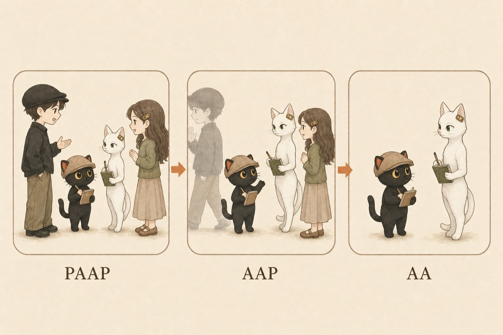

這篇提出我實際在用的會議形式：雙人馬會議。人加 Agent 對 人加 Agent，四方一起開。文章給你一套可直接照做的五步流程，以及 PAAP、AAP、AA 三階段演進判斷：什麼時候真人可以抽離、什麼條件下才輪得到純 Agent 對 Agent。
- 你跟客戶或合作夥伴談複雜專案，第一次會議兩三個小時還在對資料、對名詞、對目標。
- 你已經有自己常用的 AI（Claude、Codex、ChatGPT 都算），想讓它從「幫我打草稿」進到正式協作流程。
- 你聽過「讓你的 Agent 跟我的 Agent 說」這種未來想像，覺得方向對，但直覺哪裡怪怪的，說不上來。
- 一套可以直接照做的雙人馬會議五步流程。
- PAAP、AAP、AA 三階段演進判斷：什麼條件下人可以逐步抽離。
- 一條判斷準則：哪些事 Agent 先處理掉，哪些事必須人出面。
一場會開三小時，其實大多在對資料
人跟人直接聊，如果是一個很複雜的專案，用言語表達太浪費時間。我的實際經驗是，有時候第一次會議就開兩三個小時，然後才對齊目標。
回想一下這種會議：有多少時間在交換背景資料、確認名詞、盤點彼此手上有什麼？這些事很重要，但它們是資訊交換，還輪不到判斷。
所以會有人想：那讓 AI 代理去談就好了。你的 Agent 跟我的 Agent 直接對接，人類等結果。
兩個極端都不理想
複雜專案的背景資料量，用嘴巴同步就是要花掉幾小時。大部分時間花在還輪不到判斷的資訊交換上。
直接 Agent 轉 Agent，容易喪失太多細節。很多感受、動機、還沒想清楚的直覺，本來就很難用語言講完整；兩邊都由 Agent 壓縮後再傳送，這些訊號就掉了。（這一點，後面納瓦爾那場對談也講到，見下方印證段。）
雙人馬會議：四方一起開
我帶著我的 Agent，你帶著你的 Agent，我們四個一起聊。流程五步：
- 互爬：我先看我的 Agent 怎麼爬你的東西，你也看你的 Agent 怎麼爬我的東西。
- 各自產出溝通表：先初步生成一份溝通表，我傳給你。
- 互審：我們互審對方的稿。
- 收斂成共同的表：最終有一份共同的表。
- 人類確認：人在這一步進場。比如我的 Agent 說「對方不想做這件事」，我就直接問：「真的嗎？」對方可能說「有啊有想啊，其實我已經更新了」，也可能說「對，我就是不想，因為某個原因」。三句話就把一個 Agent 讀出來的疑點釐清了。
等於先讓 Agent 把大量的資料都過濾掉，找到真正重要的議題時，人類再去聊。就不用浪費那麼多時間在對齊資料。
為什麼叫雙人馬
這個名字借自圍棋和西洋棋的「雙人馬」：人類加 AI 一起下棋。我這邊是人類加 AI，對手也是人類加 AI，我們一起下這盤棋。所以我覺得以後這種會議就叫雙人馬會議：人加 Agent 的會議形式。
為什麼我現在用這種開法
我的觀點：以我目前處理複雜協作的經驗，這是現階段很有效率的一種做法。在 Agent 還沒有那麼聰明、我們的知識庫還沒有那麼完備的時候，真人在旁邊輔導、引導、補充、決策，是有必要的。
（整理補充）知識庫還在累積階段，Agent 就會有讀漏、誤判的地方。人在現場，一句話就能修正。
演進三階段：PAAP、AAP、AA
P 是 People（人或使用者），A 是 Agent。三個階段，就是把 P 一個一個拿掉。
人加 Agent 對 人加 Agent，四方一起聊。這是起點。尤其像我是教練、做知識教育，一定是我親自下去。
我的 AI 九成沒問題、簡單會議百分之百沒問題之後，只剩複雜、需要決策的會議人才介入。老鳥的 Agent 帶新人真人跟新人的 Agent。
等新人也成熟了，就真的 A 對 A 就好了。前提是知識庫、工作流程、對 AI 的理解都到位。

用帶新人當例子：當我已經很確定這個職場裡所有基礎會遇到的問題我都預備好了、AI 都可以處理，這時候我就可以抽離，變成我的 AI、新人、新人的 AI 三方就行了。
帶走這個判斷準則
下一場複雜會議之前，把工作先分兩堆：
- 背景資料交換、名詞對齊
- 盤點彼此手上有什麼
- 產出溝通表、互審對方的稿
- 決策、信任、承諾（影片同段的說法，我完全同意）
- 處理還沒形成語言的訊號：對方的猶豫、沒說出口的顧慮（同段影片點出的語意損失）
- Agent 讀出來、但需要當面確認的疑點
下一場複雜會議，帶你的 Agent 來
「讓你的 Agent 跟我的 Agent 說」這個未來會來，但不會直接跳過去。先四方一起開，讓 Agent 把資料過濾完、人聊真正重要的事；成熟了，人再逐步抽離。
它的表現取決於你的知識庫有多完整。從累積自己的知識資產開始。